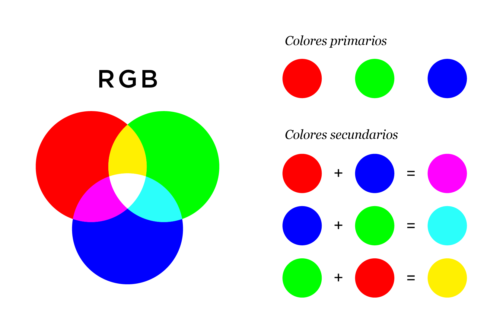
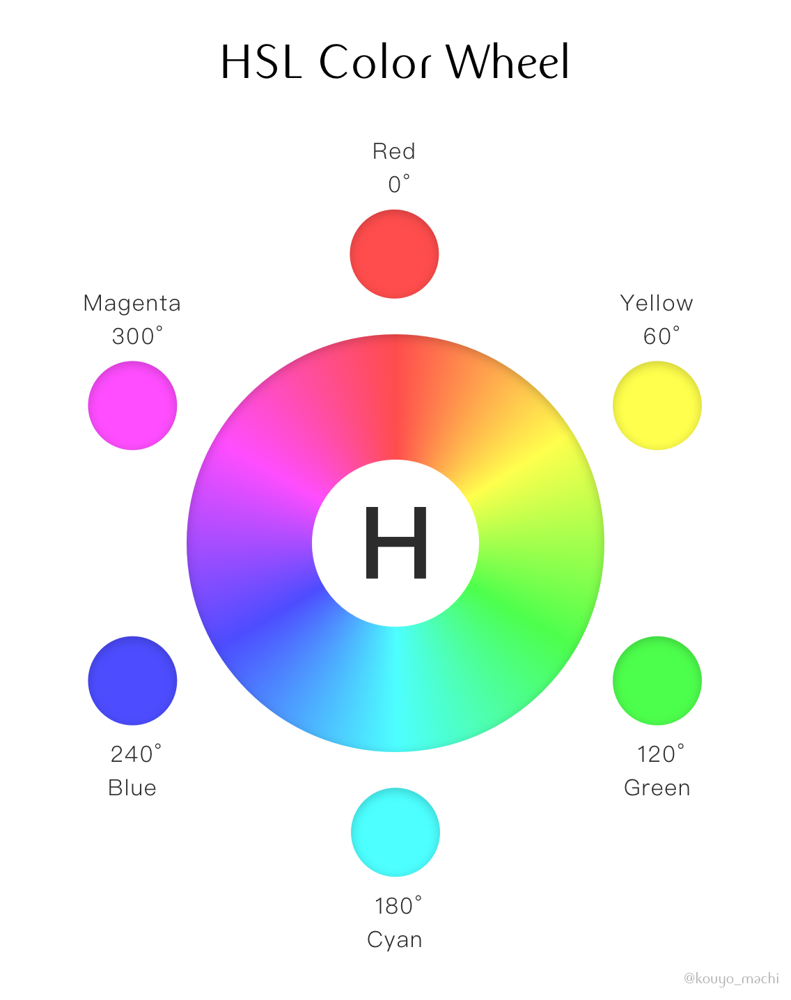
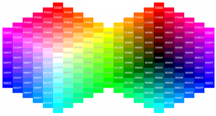

Modelo RGB

El sitio web conceptualiza a
RGB es un modelo de color basado en la síntesis aditiva, con el que es posible representar un color mediante la mezcla por adición de los tres colores de luz primarios. El modelo de color RGB no define por sí mismo lo que significa exactamente rojo, verde o azul, por lo que los mismos valores RGB pueden mostrar colores notablemente diferentes en distintos dispositivos que usen este modelo de color. Aunque utilicen un mismo modelo de color, sus espacios de color pueden variar considerablemente.
Modelo HSL

El sitio web conceptualiza que
El modelo HSL es un modelo de color de los llamados cilíndricos, por el modo de
representar gráficamente las coordenadas de su gama de colores en contraposición al
modelo cúbico RGB:

Modelo Hex
El sitio web dice que:
Color-hex gives information about colors including color models (RGB,HSL,HSV and CMYK), Triadic colors, monochromatic colors and analogous colors calculated in color page. Color-hex.com also generates a simple css code for the selected color. Html element samples are also shown below the color detail page. Simply type the 6 digit color code in the box above and hit enter.